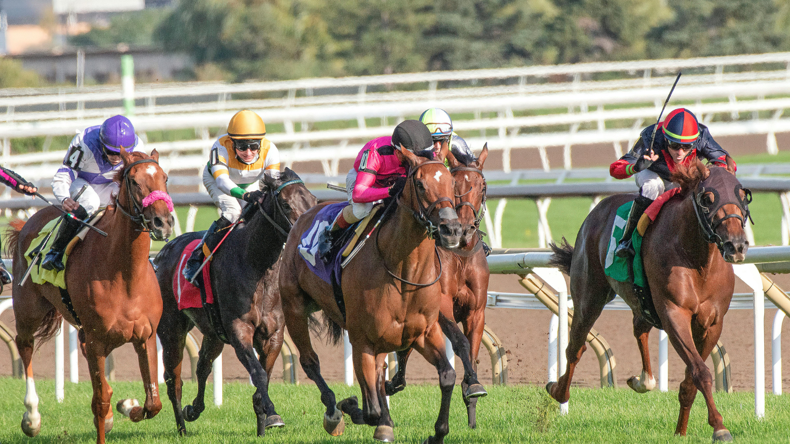

Le Prix d'Ancenis était au sommaire du Quinté+ ce samedi. Une épreuve disputée dans de bonnes conditions, avec des concurrents bien connus des parieurs. Retour sur notre analyse et nos pronostics.
Le Prix d'Ancenis a opposé des trotteurs de valeur sur le parcours de l'hippodrome d'Ancenis. La distance et le profil favorisaient les chevaux réguliers capables de donner leur meilleur sur les derniers mètres.
Nous avons basé notre pronostic sur les performances récentes, la forme des drivers et la tenue des concurrents sur la distance. Les chevaux en vue lors de leurs dernières sorties ont constitué l'ossature de notre sélection.
Notre sélection du Quinté du jour couvrait les principaux favoris et quelques outsiders de bon niveau, avec des tickets à petit, moyen et gros budget.